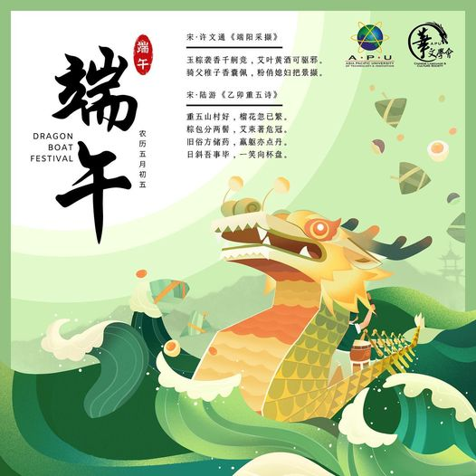
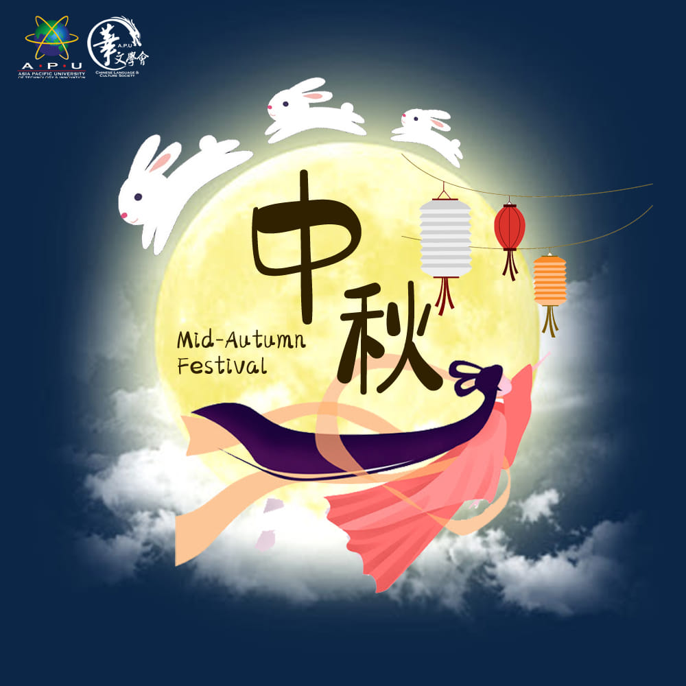

|  | The fifth lunar month is considered an unlucky month. People believed that natural disasters and illnesses are common in the fifth month. To get rid of the misfortune, people would put calamus, Artemisia, pomegranate flowers, Chinese ixora and garlic above the doors on the fifth day of the fifth month.[citation needed] Calamus is believed to be able to remove evil spirits because of its sword-like shape and strong garlic sm.... |
|
||
| When classical
music flows out for a moment, you can clearly see that what
flows in the air are mountains, flowing water, silk and
bamboo, winter snow, and the life of a thousand years, and
that inexpressible and inexhaustible touch is the beauty of
Chinese classical music. Chinese music is an important part of the glorious Chinese culture, which has gone through three periods before the middle of the 19th century: ancient, medieval and modern. For thousands of long years, it was famous for its colorful variety and connotation-rich s.... |
||||
|  |
According to legend, in ancient times, the sky appeared ten
suns, baking the earth smoke, the sea dried up, the people
see can no longer live. This incident alarmed a hero called
Hou Yi, he climbed to the top of Mount Kunlun, far enough
divine power, pulled open the divine bow, a breath of nine
extra sun, save the people in the fire this. Soon, Hou Yi
married a beautiful wife, called Chang'e. One day, Hou Yi went to Mount Kunlun to visit friends to seek the way, coincidentally met the Queen Mother who passed by, they asked the Queen Mother for a package of immortality, according t.... |
Articles